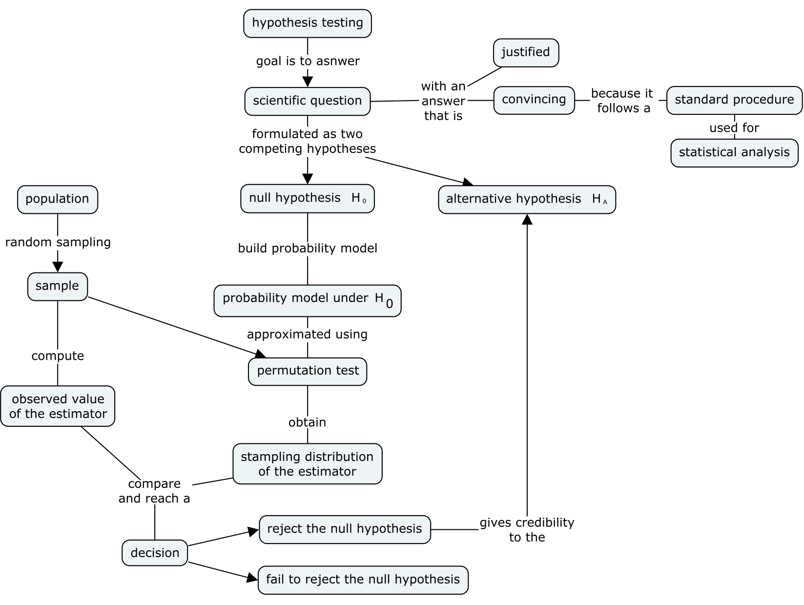
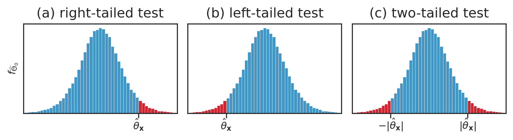
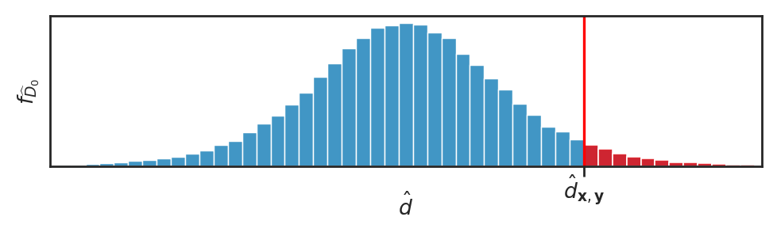
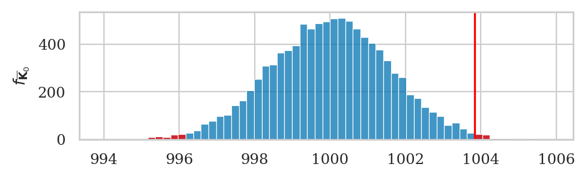
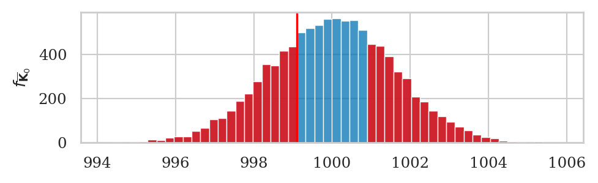
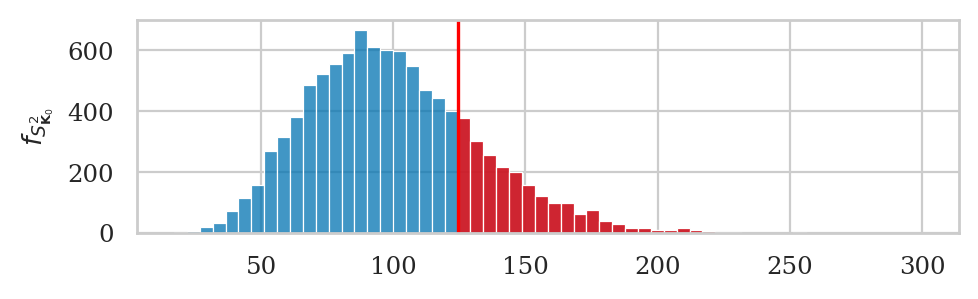
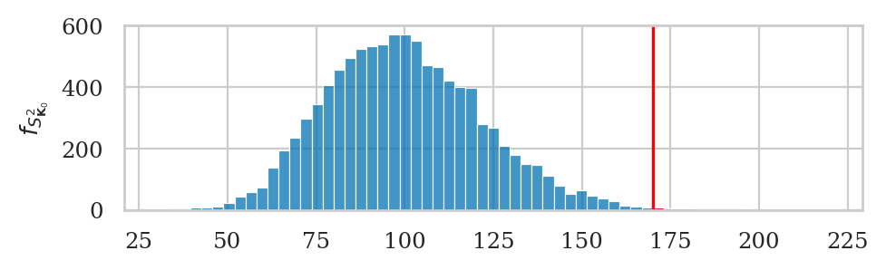
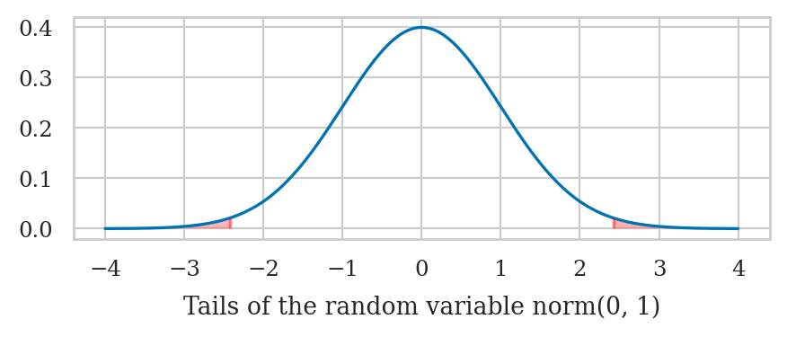
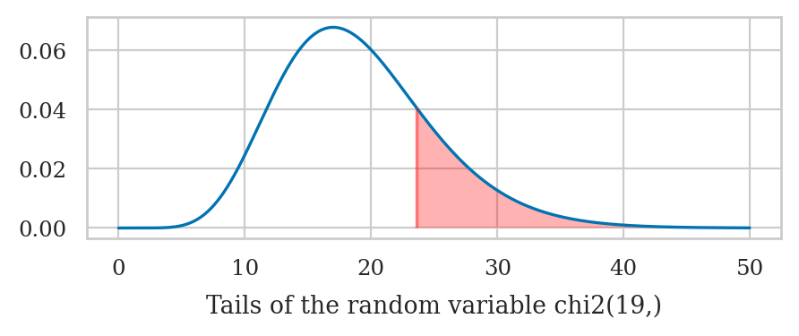
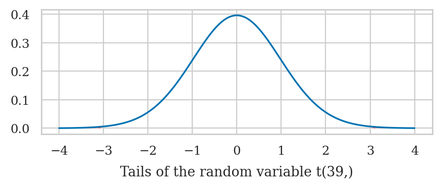

Section 3.3 — Introduction to hypothesis testing#
This notebook contains the code examples from Section 3.3 Introduction to hypothesis testing of the No Bullshit Guide to Statistics.
Notebook setup#
# load Python modules
import os
import numpy as np
import pandas as pd
import seaborn as sns
import matplotlib.pyplot as plt
# Plot helper functions
from plot_helpers import nicebins
from plot_helpers import plot_pdf
from plot_helpers import savefigure
# Figures setup
plt.clf() # needed otherwise `sns.set_theme` doesn't work
from plot_helpers import RCPARAMS
# RCPARAMS.update({'figure.figsize': (10, 3)}) # good for screen
RCPARAMS.update({'figure.figsize': (5, 1.6)}) # good for print
sns.set_theme(
context="paper",
style="whitegrid",
palette="colorblind",
rc=RCPARAMS,
)
# Useful colors
snspal = sns.color_palette()
blue, orange, purple = snspal[0], snspal[1], snspal[4]
# red = sns.color_palette("tab10")[3]
# High-resolution please
%config InlineBackend.figure_format = 'retina'
# Where to store figures
DESTDIR = "figures/stats/intro_to_NHST"
<Figure size 640x480 with 0 Axes>
# set random seed for repeatability
np.random.seed(42)
\(\def\stderr#1{\mathbf{se}_{#1}}\) \(\def\stderrhat#1{\hat{\mathbf{se}}_{#1}}\) \(\newcommand{\Mean}{\textbf{Mean}}\) \(\newcommand{\Var}{\textbf{Var}}\) \(\newcommand{\Std}{\textbf{Std}}\) \(\newcommand{\Freq}{\textbf{Freq}}\) \(\newcommand{\RelFreq}{\textbf{RelFreq}}\) \(\newcommand{\DMeans}{\textbf{DMeans}}\) \(\newcommand{\Prop}{\textbf{Prop}}\) \(\newcommand{\DProps}{\textbf{DProps}}\)
(this cell contains the macro definitions like \(\stderr{\overline{\mathbf{x}}}\), \(\stderrhat{}\), \(\Mean\), …)
Definitions#
def mean(sample):
return sum(sample) / len(sample)
def var(sample):
xbar = mean(sample)
sumsqdevs = sum([(xi-xbar)**2 for xi in sample])
return sumsqdevs / (len(sample)-1)
def std(sample):
s2 = var(sample)
return np.sqrt(s2)
def dmeans(xsample, ysample):
dhat = mean(xsample) - mean(ysample)
return dhat
What is hypothesis testing?#
An approach to formulating research questions as yes-no decisions and a procedure for making these decisions
Hypothesis testing is a standardized procedure for doing statistical analysis
(also, using stats jargon makes everything look more convincing ;)We formulate research question as two competing hypotheses:
Null hypothesis \(H_0\) = no effect.
In our example: “no difference between means,” which can be written as \(\color{red}{\mu_S = \mu_{NS} = \mu_0}\), means the probability models for the two groups have the same mean \(\mu_0\):Alternative hypothesis \(H_A\) = an effect exists. In our example: “the means for Group S is different from the mean of Group NS” can be written as \(\color{blue}{\mu_S} \neq \color{orange}{\mu_{NS}}\). The probability models for the two groups with different means are:
The purpose of hypothesis testing is to perform a basic sanity-check to show the difference between the group means we observed (\(d = \overline{\mathbf{x}}_{S} - \overline{\mathbf{x}}_{NS} = 130\)) is unlikely to have occurred by chance.
NEW CONCEPT: the \(p\)-value is the probability of observing \(d=130\) (or more extreme) under the null hypothesis.
The logic of hypothesis testing#
Overview of the hypothesis testing procedure#
Here is the high-level overview of the hypothesis testing procedure:
inputs: sample statistics computed from the observed data (in our case the signal \(\overline{\mathbf{x}}_S\), \(\overline{\mathbf{x}}_{NS}\), and our estimates of the noise \(s^2_S\), and \(s^2_{NS}\))
outputs: a decision that is one of: “reject the null hypothesis” or “fail to reject the null hypothesis”

We’ll now look at two different approaches for computing the sampling distribution of the difference between group means statistic, \(D = \overline{\mathbf{X}}_S - \overline{\mathbf{X}}_{NS}\): permutation tests and analytical approximations.
Interpreting the result of a hypothesis test (optional)#
The implication of rejecting the null hypothesis (no difference) is that there must be a difference between the group means. In other words, the average ELV (employee lifetime value) for employees who took the statistics training (Group S) is different form the average ELV for employees who didn’t take the statistics training (Group NS), which is what Amy is trying to show.
Note that rejecting null hypothesis (\(H_0\)) is not the same as “proving” the alternative hypothesis (\(H_A\)); we have just shown that the data is unlikely under the null hypothesis, so there must be some difference between the groups. The conclusion is that it’s worth looking for some alternative hypothesis.
The alternative hypothesis we picked above, \(\mu_S \neq \mu_{NS}\), is just a placeholder, that includes desirable effect: \(\mu_S > \mu_{NS}\) (stats training improves ELV), but also includes the opposite effect: \(\mu_S < \mu_{NS}\) (stats training decreases ELV).
Using statistics jargon, when we reject the hypothesis \(H_0\) we say we’ve observed a “statistically significant” result, which sounds a lot more impressive than it actually is. The null hypothesis testing procedure is used to just rule out “occurred by chance” scenario, which is a very basic sanity check.
The implication of failing to reject the null hypothesis is that the observed difference between means is “not significant,” meaning it could have occurred by chance, so there is no need to search for an alternative hypothesis.
Note that “failing to reject” is not the same as “proving” the null hypothesis.
Note also that “failing to reject \(H_0\)” doesn’t mean we reject \(H_A\). In fact, the alternative hypothesis didn’t play any role in the calculations whatsoever.
I know all this sounds super complicated and roundabout (an it is!), but you will get a hang of it with practice. Trust me, you need to know this shit.
Selecting the tails of a distribution#
The concept of statistics that are “equal or more extreme than” the observed statistic \(\hat{\theta}=g(\mathbf{x})\) is essential to the logic of hypothesis testing.
#######################################################
def tailvalues(values, obs, alt="two-sided"):
"""
Select the subset of the elements in list `values` that
are equal or more extreme than the observed value `obs`.
"""
assert alt in ["greater", "less", "two-sided"]
values = np.array(values)
if alt == "greater":
tails = values[values >= obs]
elif alt == "less":
tails = values[values <= obs]
elif alt == "two-sided":
mean = np.mean(values)
dev = abs(mean - obs)
tails = values[abs(values-mean) >= dev]
return tails
Right tail of the distribution#
Given a list of observations from the sampling distribution stats,
we want to select the observations that are equal to or larger than the observed statistic obs.
stats = [-5, -4, -3, -2, -1, 0, 1, 2, 3, 4, 5]
obs = 2
tailvalues(stats, obs, alt="greater")
array([2, 3, 4, 5])
Left tail of the distribution#
Given a list of observations from the sampling distribution stats,
we want to select the observations that are equal to or less than the observed statistic obs.
obs = -3
tailvalues(stats, -3, alt="less")
array([-5, -4, -3])
Both tails of the distribution#
We select the observations that are equal to or more extreme than the deviation
of the observed statistic obs.
This means all values that are greater than |obs| and less than -|obs|.
obs = 4
tailvalues(stats, obs, alt="two-sided")
array([-5, -4, 4, 5])
filename = os.path.join(DESTDIR, "panel_hist_p-values_left_twotailed_right_tests.pdf")
from scipy.stats import t as tdist
rvT = tdist(9)
xs = np.linspace(-4, 4, 1000)
ys = rvT.pdf(xs)
N = 100000
np.random.seed(42)
ts = rvT.rvs(N)
bins = nicebins(xs, 2, nbins=50)
with plt.rc_context({"figure.figsize":(7,2)}), sns.axes_style("ticks"):
fig, (ax3, ax1, ax2) = plt.subplots(1, 3, sharey=True)
ax3.set_ylabel("$f_{\widehat{\Theta}_0}$")
# RIGHT
title = '(a) right-tailed test'
ax3.set_title(title, fontsize=13)
sns.histplot(ts, ax=ax3, bins=bins)
ax3.set_xlim(-4, 4)
ax3.set_xticks([2])
ax3.set_xticklabels([])
ax3.set_yticks([])
# highlight the right tail
tailvalues3 = [t for t in ts if t >= 2]
sns.histplot(tailvalues3, bins=bins, ax=ax3, color="red")
ax3.text(2, -300, "$\hat{\\theta}_{\mathbf{x}}$", verticalalignment="top", horizontalalignment="center")
# LEFT
title = '(b) left-tailed test'
ax1.set_title(title, fontsize=13)
sns.histplot(ts, ax=ax1, bins=bins)
ax1.set_xlim(-4, 4)
ax1.set_xticks([-2])
ax1.set_xticklabels([])
ax1.set_yticks([])
ax1.set_ylabel("")
# highlight the left tail
tailvalues1 = tailvalues(ts, -2, alt="less")
sns.histplot(tailvalues1, bins=bins, ax=ax1, color="red")
ax1.text(-2, -300, r"$\hat{\theta}_{\mathbf{x}}$", va="top", ha="center")
# TWO-TAILED
title = '(c) two-tailed test'
ax2.set_title(title, fontsize=13)
sns.histplot(ts, ax=ax2, bins=bins)
ax2.set_xlim(-4, 4)
ax2.set_xticks([-2,2])
ax2.set_xticklabels([])
ax2.set_yticks([])
# highlight the left and right tails
tailvalues2 = [t for t in ts if t <= -2 or t >= 2]
sns.histplot(tailvalues2, bins=bins, ax=ax2, color="red")
ax2.text(-2, -300, r"$-|\hat{\theta}_{\mathbf{x}}|$", verticalalignment="top", horizontalalignment="center")
ax2.text(2, -300, r"$|\hat{\theta}_{\mathbf{x}}|$", verticalalignment="top", horizontalalignment="center")
savefigure(fig, filename)
Saved figure to figures/stats/intro_to_NHST/panel_hist_p-values_left_twotailed_right_tests.pdf
Saved figure to figures/stats/intro_to_NHST/panel_hist_p-values_left_twotailed_right_tests.png

filename = os.path.join(DESTDIR, "hist_p-value_right_tail_test.pdf")
from scipy.stats import t as tdist
rvT = tdist(9)
xs = np.linspace(-4, 4, 1000)
ys = rvT.pdf(xs)
N = 100000
np.random.seed(42)
ts = rvT.rvs(N)
bins = nicebins(xs, 2, nbins=50)
with sns.axes_style("ticks"):
fig, ax = plt.subplots()
sns.histplot(ts, ax=ax, bins=bins)
ax.set_xlabel("$\hat{d}$")
ax.set_xlim(-4, 4)
ax.set_xticks([2])
ax.set_xticklabels([])
ax.set_yticks([])
ax.set_ylabel("$f_{\widehat{D}_0}$")
# highlight the right tail
tailvaluesa = [t for t in ts if t >= 2]
sns.histplot(tailvaluesa, bins=bins, ax=ax, color="red")
ax.text(2, -300, "$\hat{d}_{\mathbf{x},\mathbf{y}}$", verticalalignment="top", horizontalalignment="center")
plt.axvline(2, color="red")
savefigure(fig, filename)
Saved figure to figures/stats/intro_to_NHST/hist_p-value_right_tail_test.pdf
Saved figure to figures/stats/intro_to_NHST/hist_p-value_right_tail_test.png

Effect size estimates#
EDITME
It’s time to study Question 2, which is to estimate the magnitude of the change in ELV obtained from completing the stats training. We call this the effect size in statistics.
effect size is a measure of difference between intervention and control groups.
We want an answer to Question 2 (What is the estimated difference between group means?) that takes into account the variability of the data.
confidence interval is a way to describe a range of values for an estimate that takes into account the variability of the data.
We want to provide an answer to Question 2 in the form of a confidence interval that tells us a range of values where we believe the true value of \(\Delta\) falls.
Reminder on confidence intervals functions#
from stats_helpers import ci_mean
from stats_helpers import ci_dmeans
Simulation tests#
Description of the problem: compare simple of obs. to an known population model
Kombucha bottling process#
Reminder of kombucha bottling scenario where theory: \(K \sim \mathcal{N}(\mu_K=1000, \sigma_K=10)\)
Computational approach: simulation given mu_0 and sigma_0 are known
Example 1S: test for the mean of Batch 04#
In words, the null hypothesis describes a regular batch, where the mean of the batch is equal to the mean of the model \(\mu_0=\mu_K=1000\).
We’ll show the hypothesis testing procedure for
two different batches from the kombucha dataset.
kombucha = pd.read_csv("../datasets/kombucha.csv")
batch04 = kombucha[kombucha["batch"]==4]
ksample04 = batch04["volume"]
ksample04.count()
40
# observed mean
obsmean04 = mean(ksample04)
obsmean04
1003.8335
The mean volume calculated from the sample ksample04 is \(3.83\) ml higher than the expected mean \(\mu_K = 1000\) ml.
Is this a big difference or not?
How likely is such deviation to occur by chance under the null hypothesis?
Sampling distribution under the null hypothesis#
To answer this question,
we need to generate the sampling distribution of the mean
for samples of size \(n=40\) under the null hypothesis \(H_0\).
We can do this using the gen_sampling_dist function,
by providing it the probability model rvK \(=K = \mathcal{N}(\mu_K=1000,\sigma_K=10)\),
which describes the variability of the kombucha volumes when the factory is operating correctly.
from scipy.stats import norm
# theoretical model for the kombucha volumes
muK = 1000 # population mean (expected kombucha volume)
sigmaK = 10 # population variance
rvK = norm(muK, sigmaK)
We can now generate the sampling distribution using simulation…
from stats_helpers import gen_sampling_dist
np.random.seed(42)
kbars40 = gen_sampling_dist(rvK, estfunc=mean, n=40)
To calculate the \(p\)-value, we want
want to calculate how many values of sampling distribution kbars40
are equal or more extreme than the observed value \(\overline{\mathbf{k}}_{04} = \) obsmean04 = 1003.8335.
tails = tailvalues(kbars40, obsmean04)
pvalue04 = len(tails) / len(kbars40)
pvalue04
0.015
# plot the sampling distribution as a histogram
sns.histplot(kbars40, bins=100)
# plot red line for the observed mean
plt.axvline(obsmean04, color="red")
# plot the values that are equal or more extreme in red
_ = sns.histplot(tails, bins=100, color="red")
filename = os.path.join(DESTDIR, "hist_p-value_kombucha_obsmean04.pdf")
# plot the sampling distribution as a histogram
bins = nicebins(kbars40, obsmean04)
ax = sns.histplot(kbars40, bins=bins)
# plot red line for the observed statistic
plt.axvline(obsmean04, color="red")
# plot the values that are equal or more extreme in red
sns.histplot(tails, bins=bins, ax=ax, color="red")
ax.set_ylabel("$f_{\overline{\mathbf{K}}_0}$")
savefigure(ax, filename)
Saved figure to figures/stats/intro_to_NHST/hist_p-value_kombucha_obsmean04.pdf
Saved figure to figures/stats/intro_to_NHST/hist_p-value_kombucha_obsmean04.png

We can now make the decision based on the \(p\)-value and a pre-determined threshold, which is conventionally chosen \(\alpha=0.05\) (1 in 20):
If the observed value of the mean
obsmean04= 1003.8335 is unlikely under \(H_0\) (\(p\)-value less than 5% chance of occurring), then our decision will be to “reject the null hypothesis.”Otherwise, if the observed value
obsmean04is not that unusual (\(p\)-value greater than 5%), we conclude that we have “fail to reject the null hypothesis.”
Recall the math statement of the null hypothesis is \(H_0: \mu = \mu_K = 1000\), which describes a batch whose mean is equal to the mean of the model \(\mu_K\). The conclusion to reject \(H_0\) means the batch is irregular.
Effect size estimates#
We were able to detect that batch differs from the expected distribution, but how big is this deviation? We can use the deviation from the expected mean as measure of the effect size \(\Delta = \overline{\mathbf{k}} - \mu_K\) in this situation.
mean(ksample04) - muK
3.833499999999958
The point estimate \(\Delta = \overline{\mathbf{k}} - \mu_K = 3.83\) tells us how much the mean of the sample differs from the expected population mean \(\mu_K\), but doesn’t tell us the uncertainty in this estimate.
The bootstrap confidence interval for the effect size \(\ci{\Delta,0.9}^*\) tells us a range of plausible values for the effect size.
from stats_helpers import gen_boot_dist
np.random.seed(48)
D_boot = gen_boot_dist(ksample04-muK, estfunc=mean)
[np.percentile(D_boot, 5),
np.percentile(D_boot, 95)]
[1.7537499999999935, 5.802025000000007]
The function ci_mean that we defined earlier performs the exact same operation,
when called with the argument method="b".
np.random.seed(48)
ci_mean(ksample04-muK, alpha=0.1, method="b")
[1.7537499999999935, 5.802025000000007]
The confidence interval \(\ci{\Delta,0.9}^* = [1.75, 5.80]\) tells us the true discrepancy of Batch 04 from the expected mean can be anywhere from 1.75 to 5.8.
Example 2S: test for the mean of Batch 01#
Let’s repeat the procedure on the sample
batch01 = kombucha[kombucha["batch"]==1]
ksample01 = batch01["volume"]
ksample01.count()
40
obsmean01 = mean(ksample01)
obsmean01
999.10375
np.random.seed(42)
kbars40 = gen_sampling_dist(rvK, estfunc=mean, n=40)
tails = tailvalues(kbars40, obsmean01)
pvalue01 = len(tails) / len(kbars40)
pvalue01
0.5708
The observed mean from batch 01 is not unlikely under \(H_0\), so we conclude that Batch 01 is a regular batch.
Using the terminology of hypothesis testing,
we say the outcome of the hypothesis test is “fail to reject \(H_0: \mu = \mu_K\).”
We have not seen any evidence that suggests that the mean of the population from
which sample ksample01 was taken differs from the mean of the expected model \(K\).
Ship it!
filename = os.path.join(DESTDIR, "hist_p-value_kombucha_obsmean01.pdf")
# plot the sampling distribution as a histogram
bins = nicebins(kbars40, obsmean01)
ax = sns.histplot(kbars40, bins=bins)
# plot red line for the observed statistic
plt.axvline(obsmean01, color="red")
# plot the values that are equal or more extreme in red
sns.histplot(tails, bins=bins, ax=ax, color="red")
ax.set_ylabel("$f_{\overline{\mathbf{K}}_0}$")
savefigure(ax, filename)
Saved figure to figures/stats/intro_to_NHST/hist_p-value_kombucha_obsmean01.pdf
Saved figure to figures/stats/intro_to_NHST/hist_p-value_kombucha_obsmean01.png

Reusable test function for the mean#
#######################################################
def simulation_test_mean(sample, mu0, sigma0, N=10000):
"""
Compute the p-value of the observed mean of `sample`
under H0 of a normal distribution `norm(mu0,sigma0)`.
"""
# Compute the observed value of the mean
obsmean = mean(sample)
n = len(sample)
# Get sampling distribution of the mean under H0
rvXH0 = norm(mu0, sigma0)
xbars = gen_sampling_dist(rvXH0, estfunc=mean, n=n)
# Compute the p-value
tails = tailvalues(xbars, obsmean)
pvalue = len(tails) / len(xbars)
return pvalue
## TEST 1 (Do we get the same answer for Batch 04?)
np.random.seed(42)
simulation_test_mean(ksample04, mu0=muK, sigma0=sigmaK)
0.015
## TEST 2 (Do we get the same answer for Batch 01?)
np.random.seed(42)
simulation_test_mean(ksample01, mu0=muK, sigma0=sigmaK)
0.5708
Example 3S: test for the variance of Batch 02#
Let’s now assume the sample of volume measurements \(\mathbf{k}_{02}\) from the Batch~02 of the kombucha bottling plant, comes from a population with unknown variance \(\sigma^2\), which we can estimate by computing the sample variance \(s^2_{\mathbf{k}_{02}}\).
We want to check whether Batch~02 is a “regular” or “irregular” by comparing the variance in the volumes of this batch \(\sigma^2\) to the variance of the theoretical model \(\sigma_K^2= 100\). Specifically, we’re interested in detecting the case when the variance is higher than expected:
Note the alternative hypothesis detects the “greater than” inequality, since we don’t mind batches with very low variance.
kombucha = pd.read_csv("../datasets/kombucha.csv")
batch02 = kombucha[kombucha["batch"]==2]
ksample02 = batch02["volume"]
ksample02.count()
20
obsvar02 = var(ksample02)
obsvar02
124.31760105263136
np.random.seed(42)
kvars20 = gen_sampling_dist(rvK, estfunc=var, n=20)
tails = tailvalues(kvars20, obsvar02, alt="greater")
pvalue = len(tails) / len(kvars20)
pvalue
0.2132
filename = os.path.join(DESTDIR, "hist_p-value_kombucha_obsvar02.pdf")
# plot the sampling distribution as a histogram
bins = nicebins(kvars20, obsvar02)
ax = sns.histplot(kvars20, bins=bins)
# plot red line for the observed statistic
plt.axvline(obsvar02, color="red")
# plot the values that are equal or more extreme in red
sns.histplot(tails, bins=bins, ax=ax, color="red")
ax.set_ylabel("$f_{S^2_{\mathbf{K}_0}}$")
savefigure(ax, filename)
Saved figure to figures/stats/intro_to_NHST/hist_p-value_kombucha_obsvar02.pdf
Saved figure to figures/stats/intro_to_NHST/hist_p-value_kombucha_obsvar02.png

Example 4S: test for the variance of Batch 08#
kombucha = pd.read_csv("../datasets/kombucha.csv")
batch08 = kombucha[kombucha["batch"]==8]
ksample08 = batch08["volume"]
ksample08.count()
40
obsvar08 = var(ksample08)
obsvar08
169.9979220512824
Sampling distribution under the null hypothesis#
np.random.seed(43)
kvars40 = gen_sampling_dist(rvK, estfunc=var, n=40)
tails = tailvalues(kvars40, obsvar08, alt="greater")
pvalue = len(tails) / len(kvars40)
pvalue
0.0041
filename = os.path.join(DESTDIR, "hist_p-value_kombucha_obsvar08.pdf")
# plot the sampling distribution as a histogram
bins = nicebins(kvars40, obsvar08)
ax = sns.histplot(kvars40, bins=bins)
# plot red line for the observed statistic
plt.axvline(obsvar08, color="red")
# plot the values that are equal or more extreme in red
sns.histplot(tails, bins=bins, ax=ax, color="red")
ax.set_ylabel("$f_{S^2_{\mathbf{K}_0}}$")
savefigure(ax, filename)
Saved figure to figures/stats/intro_to_NHST/hist_p-value_kombucha_obsvar08.pdf
Saved figure to figures/stats/intro_to_NHST/hist_p-value_kombucha_obsvar08.png

Effect size estimates#
We found the variance in the volumes in this batch is higher than the expected variance. Now let’s estimate the effect size \(\Delta = s^2_{\mathbf{k}_{08}} - \sigma_K^2\).
var(ksample08) - sigmaK**2
69.99792205128239
The bootstrap confidence interval for the effect size \(\ci{\Delta,0.9}^*\) tells us a range of plausible values for the effect size.
from stats_helpers import gen_boot_dist
np.random.seed(48)
kvars40_boot = gen_boot_dist(ksample08, estfunc=var)
D_boot = np.subtract(kvars40_boot, sigmaK**2)
[np.percentile(D_boot, 5),
np.percentile(D_boot, 95)]
[17.37369362820536, 117.98659930448775]
The interval \(\ci{\Delta,0.9}^* = [17, 118]\) tells us the difference in the variance of Batch 08 from the expected variance is somewhere between 17 and 118.
Generic simulation test function#
#######################################################
def simulation_test_var(sample, mu0, sigma0, alt="greater"):
"""
Compute the p-value of the observed variance of `sample`
under H0 of a normal distribution `norm(mu0,sigma0)`.
"""
# 1. Compute the sample variance
obsvar = var(sample)
n = len(sample)
# 2. Get sampling distribution of variance under H0
rvXH0 = norm(mu0, sigma0)
xvars = gen_sampling_dist(rvXH0, estfunc=var, n=n)
# 3. Compute the p-value
tails = tailvalues(xvars, obsvar, alt=alt)
pvalue = len(tails) / len(xvars)
return pvalue
# reproduce the results from Example 3
np.random.seed(42)
simulation_test_var(ksample02, muK, sigmaK, alt="greater")
0.2132
# reproduce the results from Example 4
np.random.seed(43)
simulation_test_var(ksample08, muK, sigmaK, alt="greater")
0.0041
Analytical approximation tests#
Formula for sampling distribution of the mean#
Reminder of kombucha bottling scenario where theory: \(K \sim \mathcal{N}(1000,10)\), samples: ⑤ kombucha
muK = 1000
sigmaK = 10
Analytical approximation for sample mean#
# norm
Example 1N: test for the mean of Batch 04#
kombucha = pd.read_csv("../datasets/kombucha.csv")
batch04 = kombucha[kombucha["batch"]==4]
ksample04 = batch04["volume"]
n04 = len(ksample04)
# observed mean
obsmean04 = mean(ksample04)
obsmean04
1003.8335
Assume we know complete model#
from scipy.stats import norm
# standard error of the mean
se = sigmaK / np.sqrt(n04)
# compute the z statistic
obsz = (obsmean04 - muK) / se
obsz
2.42451828205107
from scipy.stats import norm
rvZ = norm(0,1)
pvalue = 2 * (1 - rvZ.cdf(obsz))
pvalue
0.015328711497996528
from plot_helpers import calc_prob_and_plot_tails
_ = calc_prob_and_plot_tails(rvZ, -obsz, obsz, xlims=[-4,4])

Example 2N: test for the mean of Batch 01#
# TODO
Formula for sampling distribution of the variance#
Chi-square test for variance#
see also:
Example 3X: test for the variance of Batch 02#
kombucha = pd.read_csv("../datasets/kombucha.csv")
batch02 = kombucha[kombucha["batch"]==2]
ksample02 = batch02["volume"]
n02 = ksample02.count()
n02
20
obsvar02 = var(ksample02)
obsvar02
124.31760105263136
obschi2 = (n02-1) * obsvar02 / sigmaK**2
obschi2
23.62034419999996
from scipy.stats import chi2
df = n02 - 1
rvX2 = chi2(df)
pvalue = 1 - rvX2.cdf(obschi2)
pvalue
0.2111207328360385
# plot tails
_ = calc_prob_and_plot_tails(rvX2, 0, obschi2, xlims=[0,50])

Example 4X: test for the variance of Batch 08#
# TODO: ksample08
Tests with estimated population variance#
Analytical approximation based on Student’s \(t\)-distribution#
Example 1T: test for the mean of Batch 04#
Assume we know mean, but not variance#
# estimated standard error of the mean
s04 = std(ksample04)
sehat = s04 / np.sqrt(n04)
# compute the t statistic
obst = (obsmean04 - muK) / sehat
obst
3.087703149420272
from scipy.stats import t as tdist
df = n04 - 1 # n-1 degrees of freedom
rvT = tdist(df)
pvalue = 2 * (1 - rvT.cdf(obst))
pvalue
0.0037056653503328985
_ = calc_prob_and_plot_tails(rvT, -obst, obst, xlims=[-4,4])

# ALT. using existing function `scipy.stats`
from scipy.stats import ttest_1samp
ttest_1samp(ksample04, popmean=1000).pvalue
0.0037056653503329618
Example 2T: test for the mean of Batch 01#
# TODO
Bootstrap estimate of the standard error#
Example 1BT: test for the mean of Batch 04#
# TODO
Example 2BT: test for the mean of Batch 01#
# TODO
Explanations#
Statistical modelling and assumptions#
Two different probability models#
One-sided and two-sided tests#
Court trial analogy#
Discussion#
Problems with hypothesis testing#
##########a#############################################
def getdecision(pvalue, alpha=0.05):
"""
Check if `pvalue` is less than or equal to `alpha`.
"""
if pvalue < alpha:
# The observed statistics is unlikely to have
# occurred under the null hypothesis
print("reject H0")
else:
# The observed statistics could have occurred
# under the null hypothesis
print("fail to reject H0")
Standardized effect size#
It is sometimes useful to report the effect size using a “standardized” measure for effect sizes.
Cohen’s \(d\) is one such measure, and it is defined as the difference between two means divided by the pooled standard deviation.
def cohend(sample, mu):
"""
Cohen's d for one group compared to the theoretical mean `mu`.
"""
obsmean = mean(sample)
obsstd = std(sample)
cohend = (obsmean - mu) / obsstd
return cohend
We can interpret the value of Cohen’s d obtained using the reference table of values:
Cohen’s d |
Effect size |
|---|---|
0.01 |
very small |
0.20 |
small |
0.50 |
medium |
0.80 |
large |
Effect size for mean deviation of kombucha Batch 04 from expected value \(\mu_K=1000\).
cohend(ksample04, mu=1000)
0.4882087345321637
Effect size for the difference between electricity prices.
Exercises#
# TODO
Links#
The Introductory Statistics Course: A Ptolemaic Curriculum by George W. Cobb
Permutation Methods: A Basis for Exact Inference by Michael D. Ernst
What Teachers Should Know About the Bootstrap: Resampling in the Undergraduate Statistics Curriculum by Tim C. Hesterberg
[BOOK] Think Stats 2e by Allen B. Downey
[VIDEO] There’s Only One Test by Allen B. Downey
[TALK] Statistics for Hackers by Jake Vanderplas
New links:
{kind=link}